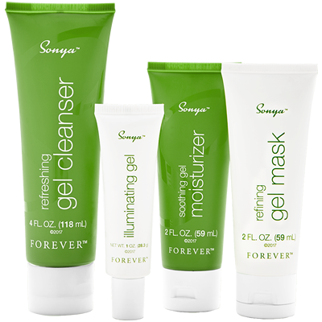

- Sonya refreshing gel cleanser -Uita de demachiantele traditionale SonyaTM refreshing gel cleanser are la baza gelul nostru de Aloe vera, imbogatit cu agenti de hidratare precum uleiul de Baobab presat la rece, care calmeaza si hidrateaza pielea. Antioxidanti puternici precum aminoacizii din mere si hidroxiacetofenona sustin tenul mixt, in timp ce fructul de acacia concinna, agent natural de curatare, ajuta la indepartarea celulelor moarte, precum si a urmelor de machiaj, pentru o demachiere perfecta.
- Sonya illuminating gel -Reda-i tenului stralucirea naturala Tenul tanar are o stralucire si o luminozitate naturale. Reda-i tenului aceasta stralucire naturala cu illuminating gel. Peptidele incapsulate in formula noastra de tip gel, cu absorbtie rapida, ajuta, prin cele mai noi descoperiri ale stiintei in domeniul ingrijirii pielii, la uniformizarea aspectului tenului. Radacina de lemn dulce si amestecul unic de alge ajuta la uniformizarea nuantei tenului si la estomparea petelor cauzate de imbatranirea pielii, in timp ce extractul din floare de trifoi rosu contribuie la reducerea aspectului porilor dilatati. Nu in ultimul rand, combinatia de cinci ingrediente de origine asiatica uniformizeaza nuanta tenului, conferindu-i un aspect neted, catifelat si o stralucire sanatoasa.
- Sonya refining gel mask - Expresia “somnul de frumusete” capata un nou sens. Formulat in mod stiintific pentru a optimiza reactiile pielii pe durata noptii, SonyaTM refining gel mask favorizeaza echilibrul controland secretia de sebum si conferind tenului un aspect luminos. Pentru ca tenul tau sa profite de tot ce e mai bun pe durata somnului, am imbogatit acest gel cu extracte vegetale valoroase, precum: ulei din seminte de morcovi, ulei de busuioc, ulei din flori de Artemisia pallens si ulei din boabe de soia. Pe masura ce gelul racoritor se absoarbe in piele, vei simti efectul hidratant al gelului nostru stabilizat de Aloe vera si a agentilor hidrantanti precum extractele din mar si din floare de trifoi. Extractul de bambus coreean si radacina de lemn dulce contribuie la stralucirea si catifelarea pielii. Prin folosirea refining gel mask de doua – trei ori pe saptamana, tenul tau va capata un aspect mai luminos, intinerit si echilibrat.
- Sonya soothing gel moisturizer -Agent emolient infuzat cu ingrediente intens hidratante Soothing gel moisturizer arata ca o lotiune, dar formula sa pe baza de gel se „topeste” la nivelul pielii. Bogata in extracte vegetale pretioase si alte ingrediente puternice, aceasta lotiune cu textura de gel se absoarbe complet la nivelul pielii, conferindu-i hidratare si emoliere. Peste 10 extracte naturale din plante si uleiuri, inclusiv esteri de jojoba si ulei de masline, ajuta pielea sa se simta hidratata si supla.